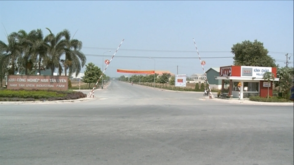

Đặc biệt trong giai đoạn cơn sốt đất 2018 diễn biến khó lường, người mua nên chuẩn bị cho mình những kiến thức cơ bản phòng tránh những rủi ro khi tiến hành giao dịch. Ông Chánh chỉ ra 7 quy tắc vàng cần lưu ý để có suất đầu tư an toàn, lãi cao.

Thứ nhất:
Mua đất có vị trí kết nối giao thông ở mức từ trung bình đến khá thuận tiện. Khi hạ tầng hoàn thiện dần, cơ hội tăng giá sẽ lớn dần. Đây chính là cách nhắm đến tiềm năng tăng giá của khu đất.
Thứ hai:
Mua những nơi đã hình thành những cụm cư dân với mật độ từ vừa phải đến đông đúc. Tuyệt đối không chọn những nơi "đồng không mông quạnh" dù giá siêu rẻ. Nhà đầu tư cần tỉnh táo trước những cái bẫy giá rẻ khi chọn mua đất. Hãy đặt ra các câu hỏi vì sao giá rẻ như vậy, có nên mua chỉ vì giá rẻ, liệu đất siêu rẻ có bao nhiêu cơ hội tăng giá...
Thứ ba:
Chỉ mua đất có pháp lý hoàn chỉnh. Khu đất đã có sổ đỏ, không vướng quy hoạch, có giấy phép xây dựng là những tài sản an toàn. Rủi ro lớn nhất cho nhà đầu tư là mua đất nền pháp lý dở dang. 2 kịch bản xấu có thể xảy ra trong tình huống này là hoặc phải mất nhiều thời gian để hoàn thiện pháp lý; hoặc không thể ra sổ (giấy chứng nhận) được do vướng các quy định, quy chuẩn.
Thứ tư:
Cần tiến hành định giá nền đất trước khi mua. Nhà đầu tư cần tìm chuyên gia bất động sản, chuyên gia thẩm định giá để được tư vấn giá đất nền dự định mua đã hợp lý hay chưa. Phương pháp định giá phổ thông là làm phép toán so sánh giá các nền đất lân cận trong thời gian gần nhất. Chỉ nên mua khi giá nền đất bằng hoặc thấp hơn giá thị trường. Đây là nguyên tắc kiếm lời khi mua chứ đừng chờ đến khi bán.
Thứ năm:
Cân nhắc đến tính thanh khoản thật sự của khu đất. Nhà đầu tư nên làm một cuộc khảo sát sơ bộ về các giao dịch đất nền trong khu vực mình chọn mua. Cần tìm hiểu nhu cầu mua bán giao dịch nơi này có thật hay không. Chỉ nên mua khi thanh khoản của tài sản tốt (có thể bán nhanh được khi cần tiền), tránh được kịch bản bị chôn vốn bất khả kháng.
Thứ sáu:
Không đầu tư quá số tiền đang có. Không sử dụng đòn bẩy tài chính, tốt nhất chỉ nên dùng tiền nhàn rỗi. Nếu thiếu hụt, chỉ vay trong ngưỡng an toàn (50% giá trị tài sản trở xuống). Trước khi vay, nên tính đến bài toán lãi suất thả nổi và sức chịu đựng trả lãi được bao lâu để lường trước các áp lực. Mua đất lúc thị trường khủng hoảng, giá sụt giảm mạnh, là thời điểm vàng. Thị trường càng nóng sốt, càng phải biết liệu cơm gắp mắm.
Thứ bảy:
Nên đầu tư đất theo đội nhóm. Rủi ro sẽ giảm đi khi có nhiều đối tác cùng đồng hành. Đất nền là thị trường phức tạp, nhiều cạm bẫy đối với nhà đầu tư non kinh nghiệm. Đầu tư theo nhóm có ưu điểm là kiến thức của các đối tác về đất nền sẽ được cộng hưởng rất tốt. Đi một mình chỉ được chặng ngắn, đi cùng nhau có thể tiến xa.